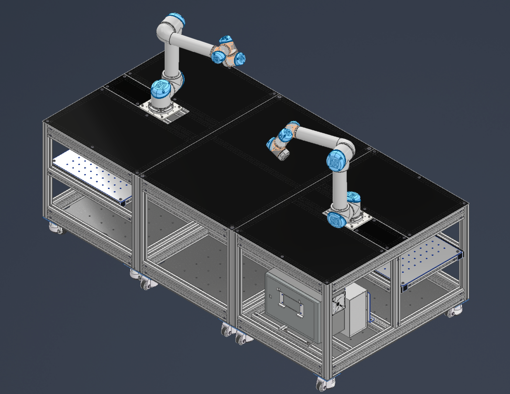
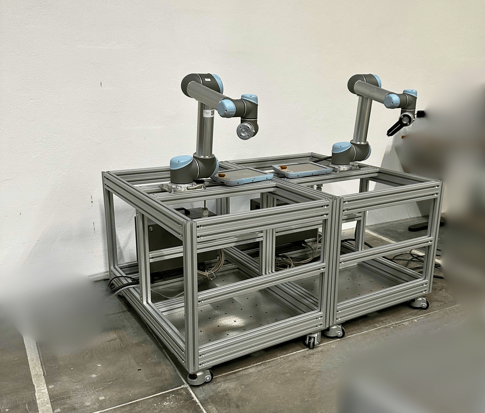

Modular Robotic Test Platform
Mechanical design of a modular robotic test platform using aluminum-profile structures. The platform was designed to support robotic testing, provide flexible mounting areas, improve portability, and create a more practical setup for development and integration work.

Overview
This project focused on the design of a modular test platform for robotic development. The setup used aluminum profiles and integrated mounting areas so that robotic hardware, work surfaces, and supporting components could be arranged in a structured and flexible way.
The platform was intended to make robotic testing more practical by providing a movable and modular base for development work. The design needed to be robust enough for testing while still remaining adaptable for future changes.
My contribution
My work focused on the CAD design of the aluminum-profile structure and surrounding mechanical components. The goal was to create a platform that could support robotic testing while remaining modular, transportable, and practical for integration work.
- Designed the aluminum-profile frame structure in CAD.
- Integrated mounting areas for robotic hardware and work surfaces.
- Designed surrounding mechanical components for the test setup.
- Considered mobility, transport, accessibility, and practical assembly.
- Worked with a modular structure so the platform could be adapted for future testing needs.
Engineering challenges
Modularity and flexibility
- The platform needed to support different robotic testing configurations.
- The layout had to remain adaptable instead of being designed for only one fixed setup.
- Mounting surfaces and frame geometry had to work together as a coherent test environment.
Practical integration
- The structure had to be robust enough for robotic testing and development work.
- Transportability and access to components had to be considered during the layout.
- The design needed to be simple enough to manufacture, assemble, and modify when needed.
CAD design
Physical setup

What I learned
This project gave me more practical experience designing with aluminum profiles in a professional CAD workflow. It also reinforced how important it is to think about assembly, transport, accessibility, and future modifications when designing robotic test setups.
The main takeaway was that even a test platform should be treated as a product-like system: it needs to be robust, modular, practical to build, and useful for the people who will use it.
Outcome
The result was a modular aluminum-profile test platform for robotic development and integration. The design provided a structured base for robotic testing while remaining adaptable for future changes and practical use.